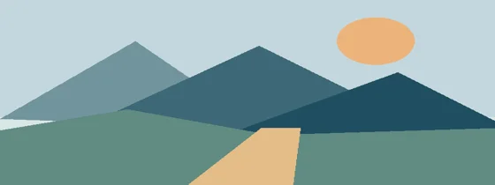

Расположение имеет значение
Внешняя таблица стилей задаёт цвета, отступы и колонки Flexbox. Этот текст остаётся русским и переносится по ширине блока.
СТРАНИЦЫ В ЦВЕТЕ
Настоящая HTML-страница: оформление, изображения и ссылки на своих местах. Прокручивай пальцем и меняй масштаб двумя пальцами.
Посмотреть возможности ↓PNG · изображение из отдельного файла
Внешняя таблица стилей задаёт цвета, отступы и колонки Flexbox. Этот текст остаётся русским и переносится по ширине блока.
Тап открывает ссылку. Движение пальца прокручивает страницу без случайного перехода. Масштабирование сохраняет точку под пальцами.
СЛЕДУЮЩИЙ ЭКРАН
Этот раздел находится ниже первого экрана. По нему проверяются прокрутка и попадание по нарисованной ссылке.
JPEG · второй формат изображения

WebP · третий формат изображения
Открыть сайт Keldurn →Здесь проверяется отображение страниц. JavaScript, формы, WebGPU и игра ещё не подключены.